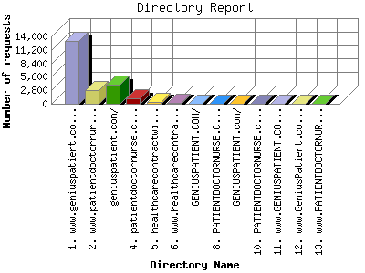

The Directory Report analyzes accesses to this web site's directories. This information can be useful in determining the most requested areas.
This report shows results with at least 0.010000 percent of the total bytes. This report is sorted by amount of bytes transferred.

| Directory Name | Number of requests | Percentage of the bytes | |
|---|---|---|---|
| 1. | www.geniuspatient.com/ | 13,083 | 57.13% |
| 2. | www.patientdoctornurse.com/ | 2,798 | 17.29% |
| 3. | geniuspatient.com/ | 3,977 | 16.29% |
| 4. | patientdoctornurse.com/ | 1,159 | 7.12% |
| 5. | healthcarecontractwithamerica.com/ | 319 | 0.92% |
| 6. | www.healthcarecontractwithamerica.com/ | 228 | 0.91% |
| 7. | GENIUSPATIENT.COM/ | 22 | 0.12% |
| 8. | PATIENTDOCTORNURSE.COM/ | 16 | 0.07% |
| 9. | GENIUSPATIENT.com/ | 5 | 0.05% |
| 10. | PATIENTDOCTORNURSE.com/ | 4 | 0.04% |
| 11. | www.GENIUSPATIENT.COM/ | 3 | 0.03% |
| 12. | www.GeniusPatient.com/ | 1 | 0.01% |
| 13. | www.PATIENTDOCTORNURSE.COM/ | 1 | 0.01% |
This report was generated on May 28, 2011 12:48.
Report time frame September 23, 2009 04:12 to March 6, 2011 21:07.
| Web statistics report produced by: analog 6.0 / Report Magic 2.21 |